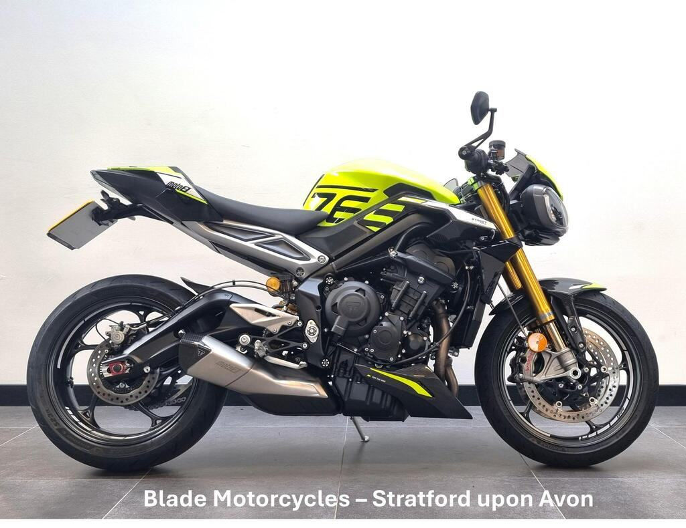

Born on the Moto2 grid
Street Triple 765 Moto2 Edition
“The lurid lumo yellow version would make Rossi reach for his sunnies.”
“In the high-speed direction changes through Maggotts and Becketts, the Moto2 Edition is simply sublime.”

A Moto2 under £11k from Blade Triumph, with finance listed.
Seller: Blade Triumph, Stratford. Contact details are on the original ad.
| Price | £10,999 |
|---|---|
| Year | 2023 |
| Miles | 7,168 miles |
| Model | Street Triple Moto2 |
| Location / dealer | Blade Triumph, Stratford |
| Distance from Poole | ≈ 103 miles as the crow flies (straight line from Poole BH15 1AA, estimated from “Stratford-upon-Avon”) |
| On the lists | Moto2 Edition |
| Finance | Finance listed on the advert |
| Registration | Not visible (dealer cover plate) |
| MOT (ad) | Expires 25/05/2027 |
| First registered (ad) | 26/05/2023 |
Facts marked (ad) come from the listing. Ask the seller to show you the paperwork.
Several 2023–24 RS owners on MCN say the quickshifter stopped working at under 2,000 miles. Triumph has since revised the sensor, and dealers replaced it under warranty. Test both up and down shifts on a test ride, and ask whether the sensor has already been replaced. Source: MCN owners’ reviews ↗
MCN notes one owner reporting an engine coolant leak. Look for damp patches or crusty residue around the engine cases, the water pump and the radiator hoses. Source: MCN review ↗
Triumph’s technical bulletin TB262 covers the 765 R, RS, RX and Moto2. It is a workshop bulletin, not a safety recall. If thin valve shims are needed at a valve-clearance check, the dealer must fit updated retainers (part 1131111). Ask whether it has been done, and check for any outstanding recalls on the frame number. Source: Triumph TB262 ↗
Registration: Not visible (dealer cover plate)
Without a confirmed registration I couldn’t check the DVLA and MOT records. Ask the seller for the registration, then use the GOV.UK MOT history and DVLA vehicle enquiry checks.
| Spec | Moto2 Edition |
|---|---|
| Power | 130PS @ 12,000rpm |
| Torque | 80Nm @ 9,500rpm |
| Weight | 188kg wet |
| Seat height | 839mm |
| Front suspension | Öhlins NIX30, fully adj. |
| Rear suspension | Öhlins STX40, fully adj. |
| Front brakes | 2×310mm, Brembo Stylema, OC-ABS |
| Electronics | As RS + clip-ons, ABS Track mode |
| Fuel tank | 15L |
Sources: Triumph UK – Street Triple 765 spec · Triumph media – 2023 range · Triumph – Moto2 spec · Triumph UK – 765 RX · Triumph media – 2020 RS · MCN – 2020–22 RS review · Motorcycle.com – 2020 RS first ride · Motorcycle.com – 2020 R first look
“The lurid lumo yellow version would make Rossi reach for his sunnies.”
“In the high-speed direction changes through Maggotts and Becketts, the Moto2 Edition is simply sublime.”
Seller: Blade Triumph, Stratford. Contact details are on the original ad.